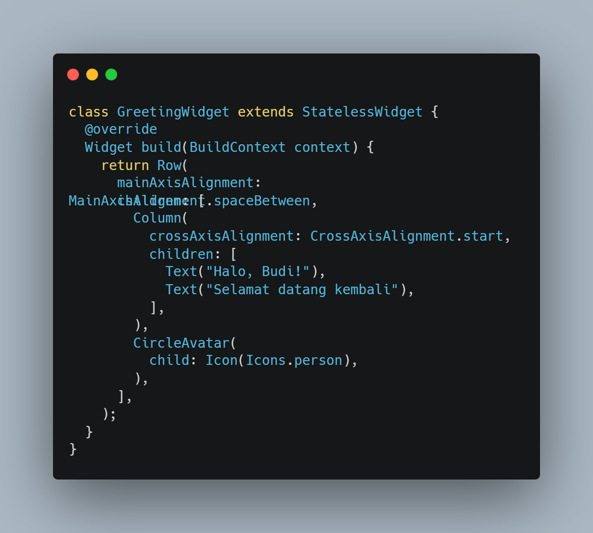
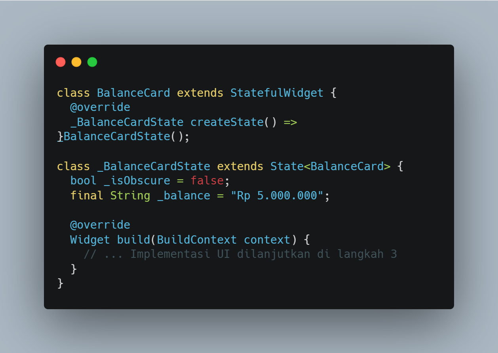
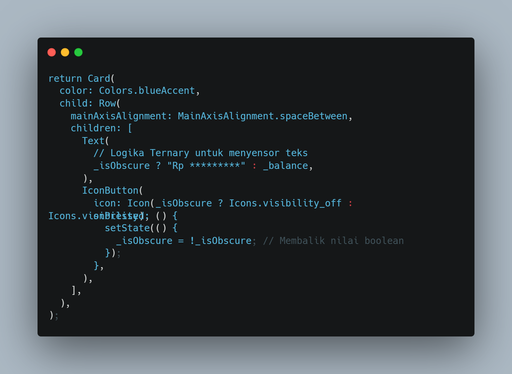
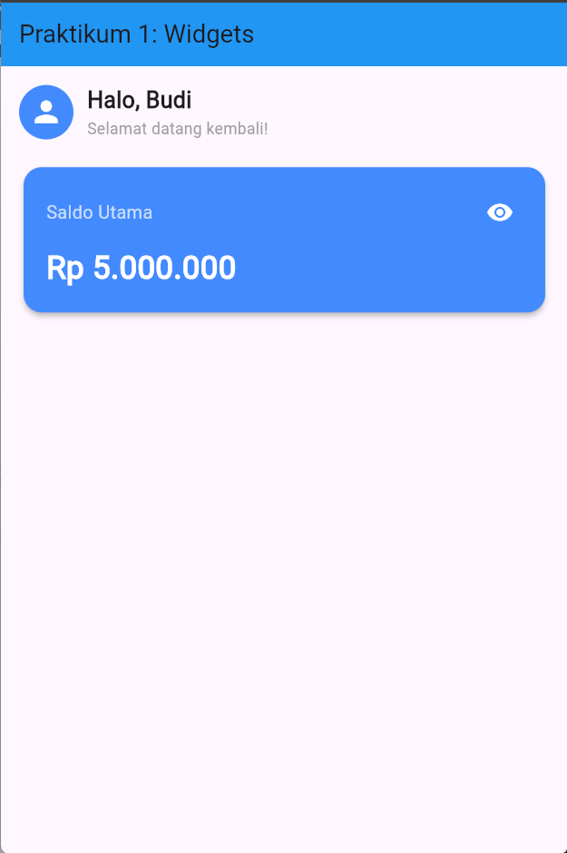
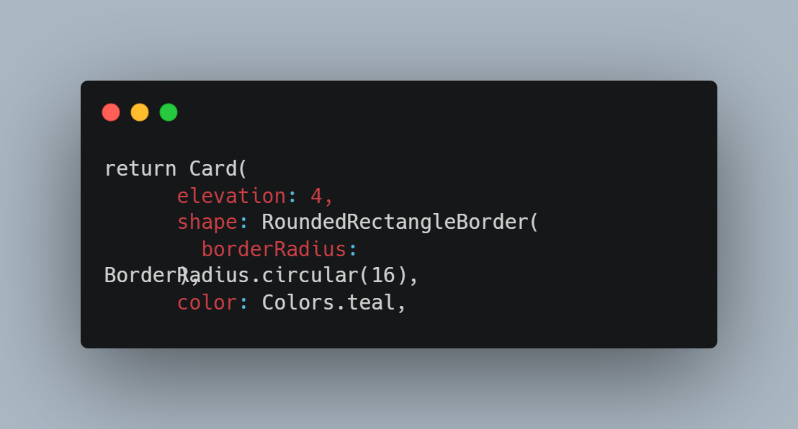
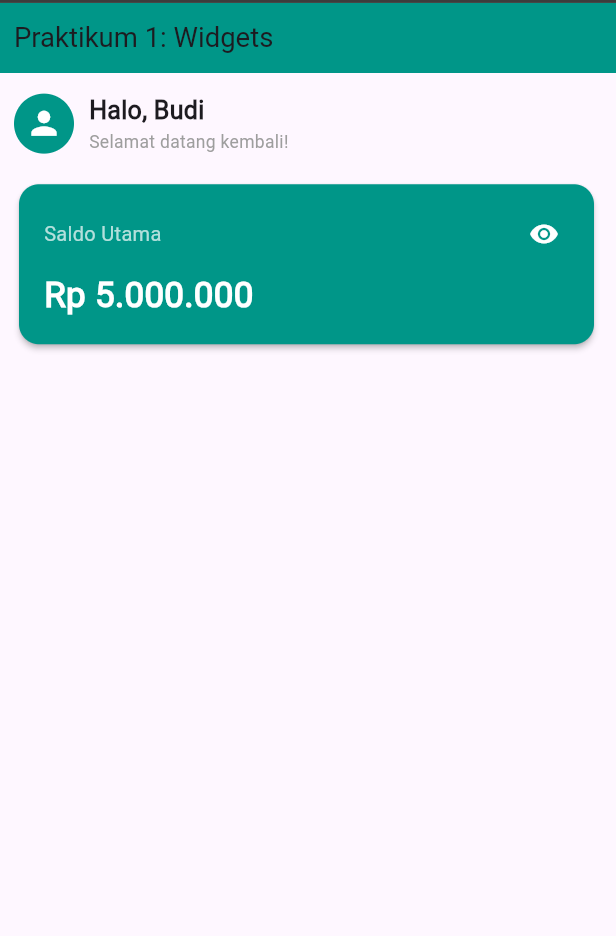
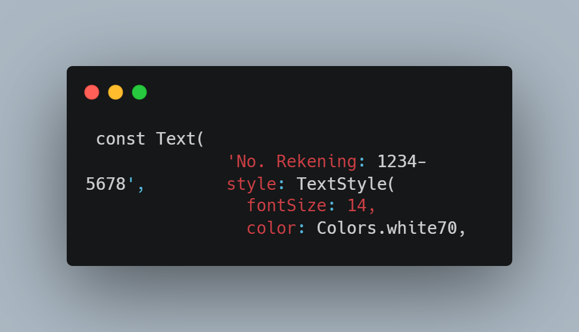
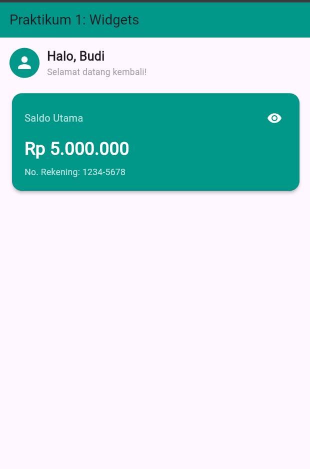

Dokumentasi Praktikum Pengenalan Widgets dan Manajemen State Dasar pada Framework Flutter
Pengembangan aplikasi modern menuntut efisiensi dalam pembangunan antarmuka pengguna yang responsif dan menarik. Framework Flutter berbasis bahasa pemrograman Dart hadir membawa pendekatan declarative UI, di mana seluruh elemen antarmuka dibangun menggunakan komponen modular yang disebut widget. Struktur dasar aplikasi Flutter umumnya diawali dengan kontainer utama seperti MaterialApp dan Scaffold yang berfungsi sebagai fondasi struktur visual, tema, serta tata letak antarmuka.
Dalam Flutter, pengolahan tampilan dibagi menjadi StatelessWidget untuk komponen statis yang tampilannya tidak berubah dan StatefulWidget untuk komponen dinamis yang menyimpan data internal. Praktikum ini berfokus pada penerapan pemahaman dasar mengenai manajemen state menggunakan fungsi setState(), yang diimplementasikan pada pembuatan antarmuka dasbor interaktif berupa sapaan pengguna dan kartu saldo dengan fitur penyensoran nominal serta kustomisasi tampilan.
Tujuan dari praktikum ini adalah:
1. Membuat Widget Sapaan (Stateless).

Kode ini membuat StatelessWidget bernama GreetingWidget untuk menampilkan header sapaan statis yang tampilannya tidak berubah setelah dirender. Komponen disusun secara horizontal menggunakan Row, yang berisi Column untuk menumpuk teks sapaan secara vertikal di sebelah kiri serta CircleAvatar untuk menampilkan ikon profil pengguna di sebelah kanan.
2. Membuat Kartu Saldo (Stateful).

Kode ini membentuk struktur dasar StatefulWidget bernama BalanceCard yang terdiri dari dua kelas terpisah agar tampilannya dapat dinamis dan berinteraksi dengan pengguna. Kelas _BalanceCardState berfungsi menyimpan status internal aplikasi, di mana variabel boolean _isObscure digunakan untuk mengontrol status sembunyi/tampil nominal saldo, sedangkan variabel _balance menyimpan nilai nominal uang yang akan ditampilkan.
3. Menerapkan Interaktivitas (setState).

Kode ini memberikan interaktivitas pada tombol IconButton dengan memanggil setState(), yang bertugas membalik nilai variabel _isObscure setiap kali ikon ditekan. Pemanggilan setState() memicu Flutter untuk merender ulang UI, sehingga logika operator ternary secara otomatis mengubah teks nominal saldo antara versi tersensor atau nilai asli, sekaligus memperbarui ikon mata di sampingnya.
4. Hasil Akhir.

5. Tugas 1: Styling → Ubah warna tema BalanceCard dari biru (Colors.blueAccent) menjadi hijau emerald (Colors.teal).

Output:

6. Tugas 2: Modifikasi UI → Tambahkan teks statis berupa "No. Rekening: 1234-5678" di bagian bawah nominal saldo di dalam kartu.

Output:

Berdasarkan praktikum yang telah dilaksanakan, dapat disimpulkan bahwa pemisahan antara StatelessWidget dan StatefulWidget merupakan fondasi utama dalam membangun antarmuka Flutter yang efisien. Komponen GreetingWidget berhasil dibuat secara statis untuk menampilkan sapaan dan avatar pengguna, sedangkan BalanceCardWidget berhasil menyajikan kartu saldo interaktif yang merespons ketukan tombol ikon mata untuk menyensor atau menampilkan nominal saldo secara real-time memanfaatkan fungsi setState().
Selain itu, penyelesaian tugas praktikum berhasil dilakukan dengan mengubah tema warna BalanceCardWidget dari Colors.blueAccent menjadi Colors.teal, serta menambahkan teks statis nomor rekening tepat di bawah nominal saldo di dalam tata letak Column. Secara keseluruhan, praktikum ini memperkuat pemahaman mengenai komposisi hierarki widget, penyusunan tata letak, dan logika manajemen state dasar pada Flutter.
Lihat Repository GitHub